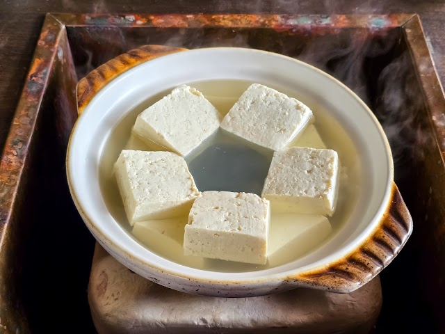
| 営業時間 | 月・火・水・金 11:00〜16:00 ／ 土・日 11:00〜17:00 |
|---|---|
| 定休日 | 木曜 |
| 住所 | 京都府京都市東山区清水３丁目３４０ |
| 予約 | 可 — ☎ 075-525-2051 ／ 公式サイト |
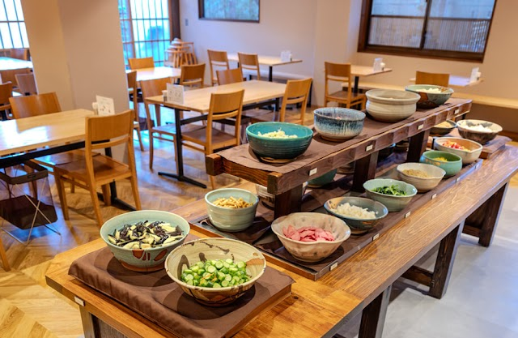
| 営業時間 | 月・火・水・木・金 11:00〜16:00 ／ 土・日 11:00〜17:00 |
|---|---|
| 定休日 | なし(要最終確認) |
| 住所 | 京都府京都市東山区清水３丁目３４３ |
| 予約 | 要確認 — ☎ 075-525-1519 ／ 公式サイト |
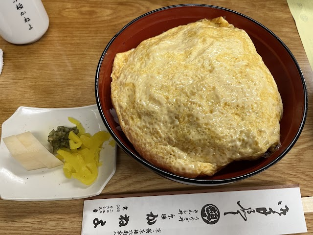
| 営業時間 | 月・火・木・金・土・日 11:30〜15:00, 17:00〜20:00 |
|---|---|
| 定休日 | 水曜 |
| 住所 | 京都府京都市中京区松ケ枝町４５６−２ |
| 予約 | 可 — ☎ 075-221-0669 ／ 公式サイト |
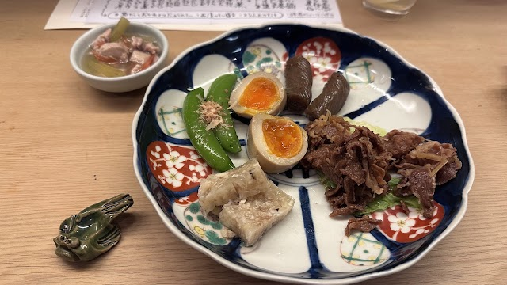
| 営業時間 | 月・火・木・金・土・日 15:00〜21:30 |
|---|---|
| 定休日 | 水曜 |
| 住所 | 京都府京都市中京区木屋町通三条上ル中島町９６ ＳＡＮＪＯ ＫＩＹＡＭＡＣＨＩ ＢＬＤ． Ⅱ1F |
| 予約 | 可 — ☎ 075-231-1095 ／ 公式サイト |
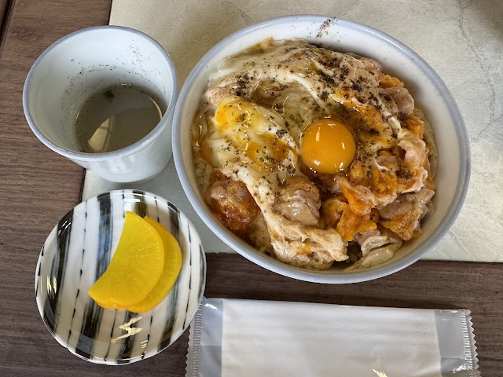
| 営業時間 | 月・火・水・金・土・日 11:30〜15:00 |
|---|---|
| 定休日 | 木曜 |
| 住所 | 京都府京都市上京区五辻通智恵光院西入ル五辻町７５ |
| 予約 | 要確認 — ☎ 075-441-4004 |
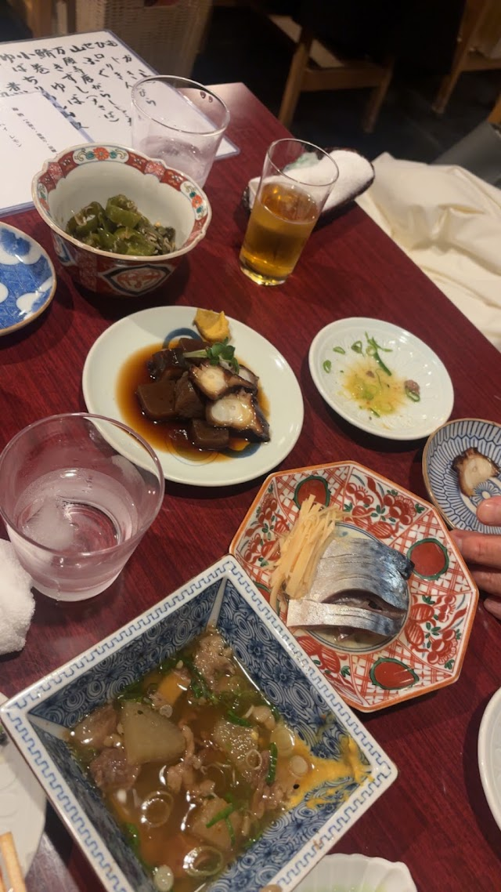
| 営業時間 | 月・火・水・木・金・土 17:00〜22:00 |
|---|---|
| 定休日 | 日曜 |
| 住所 | 京都府京都市中京区下樵木町２０２ |
| 予約 | 可 — ☎ 075-221-6816 |
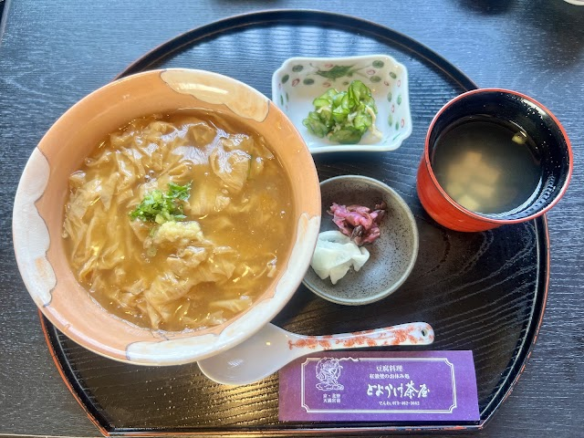
| 営業時間 | 月・火・水・土・日 11:00〜14:00 |
|---|---|
| 定休日 | 木・金曜 |
| 住所 | 京都府京都市上京区今出川通御前西入紙屋川町８２２ |
| 予約 | 要確認 — ☎ 075-462-3662 ／ 公式サイト |
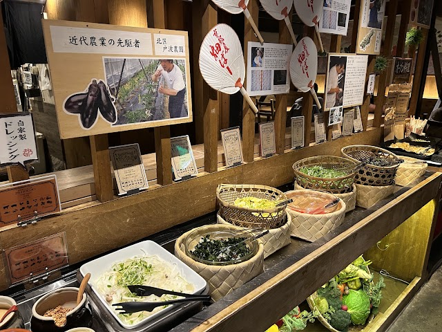
| 営業時間 | 月・火・水・木・金・土・日 7:00〜9:15, 10:30〜16:00, 16:30〜22:00 |
|---|---|
| 定休日 | なし(要最終確認) |
| 住所 | 京都府京都市下京区綾小路通東洞院東入扇酒屋町２７４ 東洞院東入る 扇酒屋町276 |
| 予約 | 可 — ☎ 075-351-2732 ／ 公式サイト |
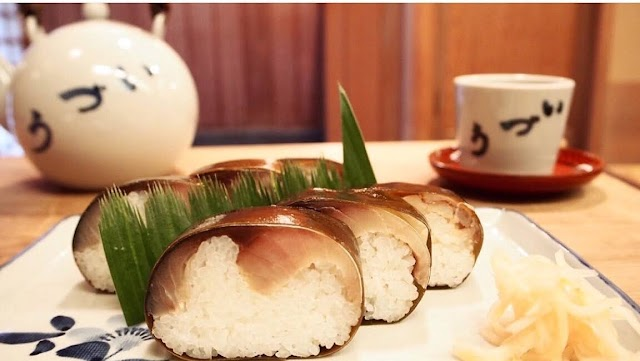
| 営業時間 | 月・水・木・金・土 11:00〜22:00 ／ 日 11:00〜21:00 |
|---|---|
| 定休日 | 火曜 |
| 住所 | 京都府京都市東山区清本町３６７ |
| 予約 | 可 — ☎ 075-561-0751 ／ 公式サイト |
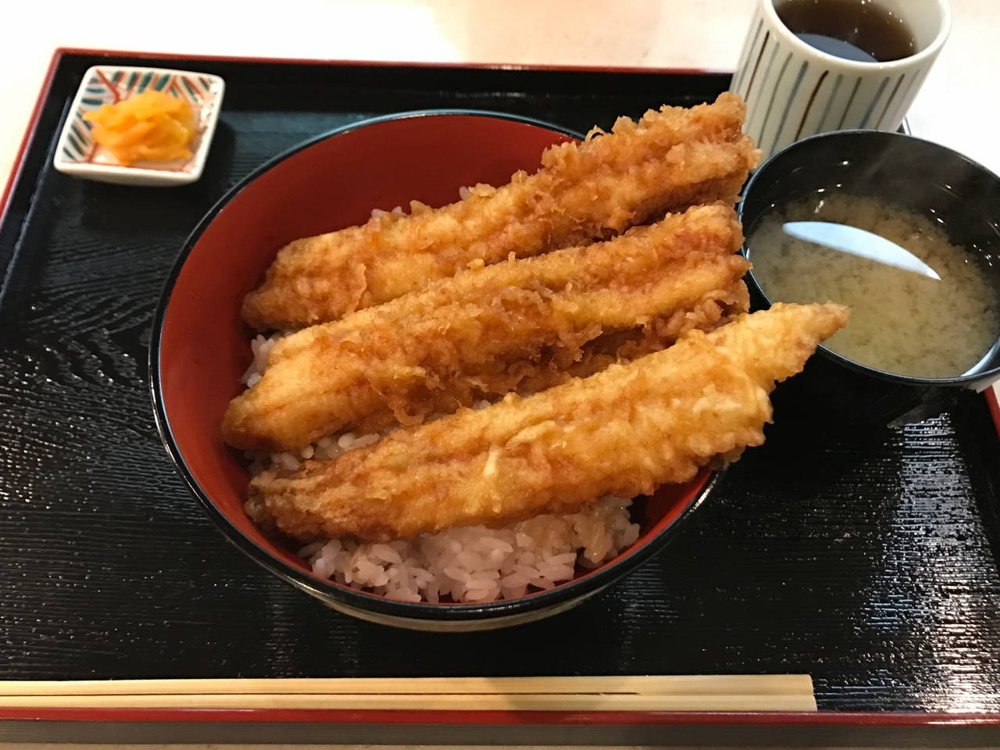
| 営業時間 | 11:00〜14:00／17:30〜21:00（LO20:30） |
|---|---|
| 定休日 | 水曜 |
| 住所 | 京都府京都市東山区祇園町北側ぎおん天ぷら天周 |
| 予約 | 要確認 |
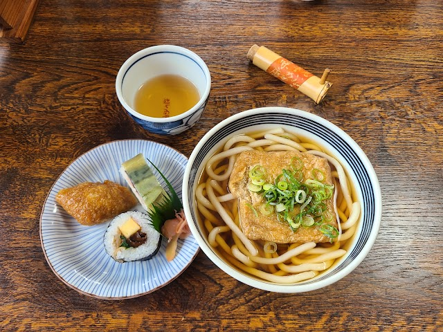
| 営業時間 | 月・火・水・木・金・土・日 10:00〜16:00 |
|---|---|
| 定休日 | なし(要最終確認) |
| 住所 | 京都府京都市伏見区深草稲荷御前町８２−１ |
| 予約 | 要確認 — ☎ 075-641-0802 ／ 公式サイト |
| 営業時間 | 火・水・木・金・土・日 11:00〜22:00 |
|---|---|
| 定休日 | 月曜 |
| 住所 | 京都府京都市伏見区上油掛町１８６ |
| 予約 | 可 — ☎ 075-622-5533 ／ 公式サイト |
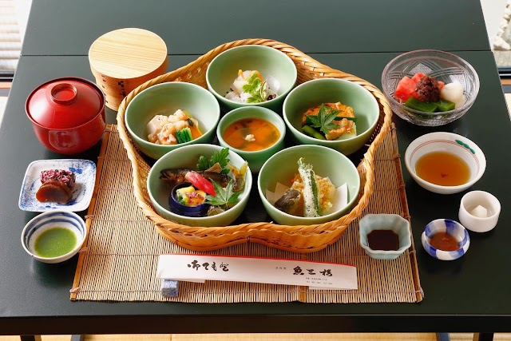
| 営業時間 | 月・水・木・金・土 11:30〜14:30, 17:00〜22:00 ／ 日 11:30〜14:30, 17:00〜20:30 |
|---|---|
| 定休日 | 火曜 |
| 住所 | 京都府京都市伏見区京町３丁目１８７ |
| 予約 | 可 — ☎ 075-601-0061 ／ 公式サイト |
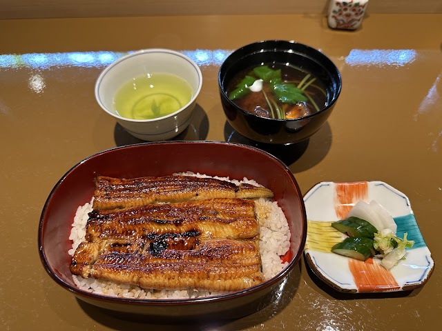
| 営業時間 | 火・水・木・金・土・日 11:00〜14:30, 17:00〜20:00 |
|---|---|
| 定休日 | 月曜 |
| 住所 | 京都府京都市右京区嵯峨天龍寺北造路町４４−１ |
| 予約 | 可 — ☎ 075-871-5226 ／ 公式サイト |
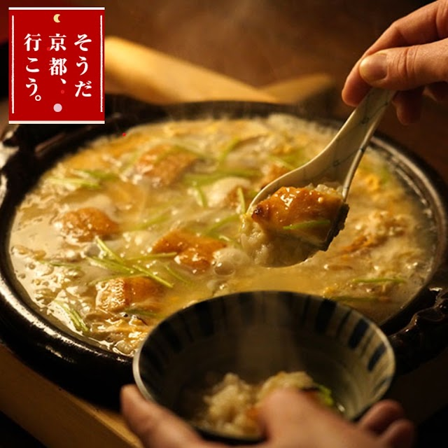
| 営業時間 | 月・水・木・金・土・日 11:30〜14:00, 17:00〜19:00 |
|---|---|
| 定休日 | 火曜 |
| 住所 | 京都府京都市東山区西之門町５５５ |
| 予約 | 可 — ☎ 075-561-1290 ／ 公式サイト |
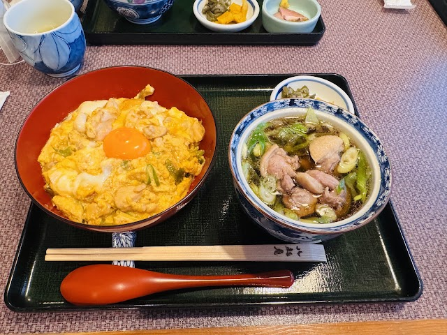
| 営業時間 | 火・水・木・金・土・日 11:30〜15:00, 17:00〜22:00 |
|---|---|
| 定休日 | 月曜 |
| 住所 | 京都府京都市左京区東丸太町８ |
| 予約 | 可 — ☎ 075-761-5470 ／ 公式サイト |
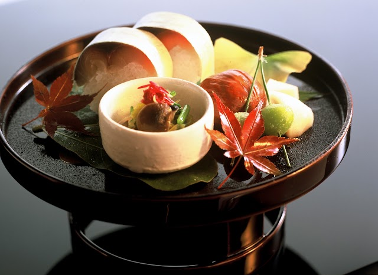
| 営業時間 | 月・火・水・木・金・土・日 12:00〜15:00, 18:00〜21:30 |
|---|---|
| 定休日 | なし(要最終確認) |
| 住所 | 京都府京都市下京区岩戸山町４１６ |
| 予約 | 可 — ☎ 075-352-0001 ／ 公式サイト |
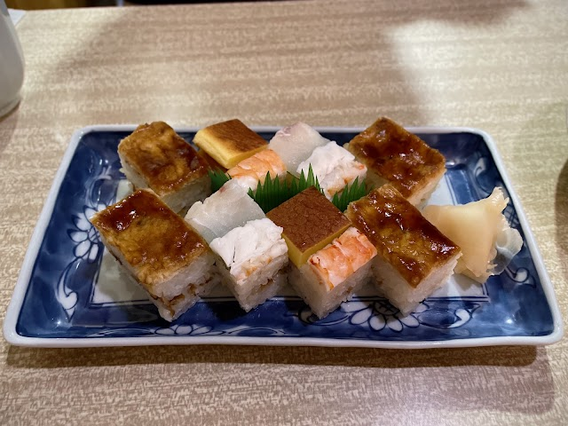
| 営業時間 | 水・木・金・土・日 11:00〜18:00 |
|---|---|
| 定休日 | 月・火曜 |
| 住所 | 京都府京都市中京区要法寺前町７１１ |
| 予約 | 可 — ☎ 075-231-1363 ／ 公式サイト |
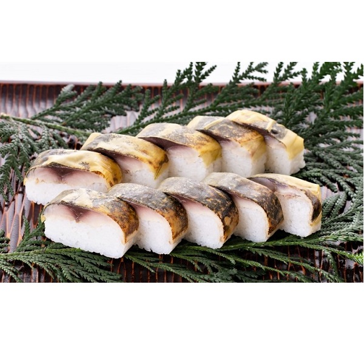
| 営業時間 | 月・火・木・金 10:00〜17:00 ／ 土・日 10:00〜18:00 |
|---|---|
| 定休日 | 水曜 |
| 住所 | 京都府京都市左京区下鴨宮崎町１２１ |
| 予約 | 要確認 — ☎ 075-712-5245 ／ 公式サイト |
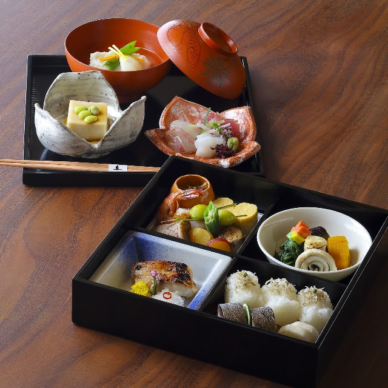
| 営業時間 | 月・水・木・金・土・日 11:30〜15:00, 17:00〜21:00 |
|---|---|
| 定休日 | 火曜 |
| 住所 | 京都府京都市左京区下鴨宮河町６２ |
| 予約 | 可 — ☎ 075-701-5185 ／ 公式サイト |
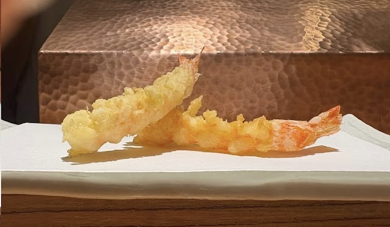
| 営業時間 | 月・水・木・金・土・日 11:30〜13:00, 17:30〜19:00 |
|---|---|
| 定休日 | 火曜 |
| 住所 | 京都府京都市中京区下白山町２９９ |
| 予約 | 可 — ☎ 075-212-7778 ／ 公式サイト |
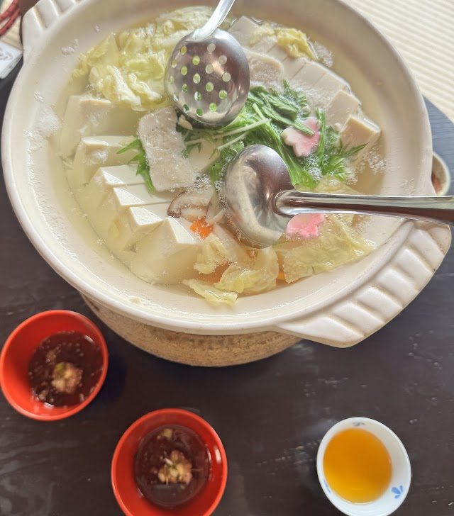
| 営業時間 | 月・火・金・土・日 11:00〜15:00 |
|---|---|
| 定休日 | 水・木曜 |
| 住所 | 京都府京都市右京区龍安寺御陵ノ下町 |
| 予約 | 可 — ☎ 075-462-4742 ／ 公式サイト |
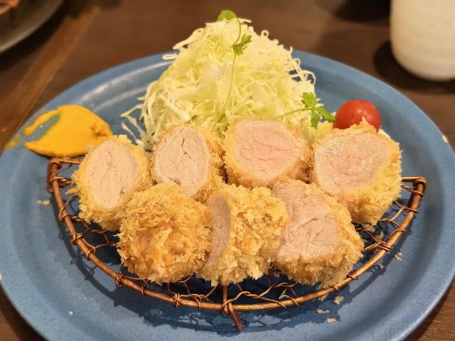
| 営業時間 | 月・火・水・金 10:00〜20:00 ／ 土・日 9:00〜20:00 |
|---|---|
| 定休日 | 木曜 |
| 住所 | 京都府京都市山科区竹鼻西ノ口町５７−１ |
| 予約 | 可 — ☎ 075-595-0295 ／ 公式サイト |
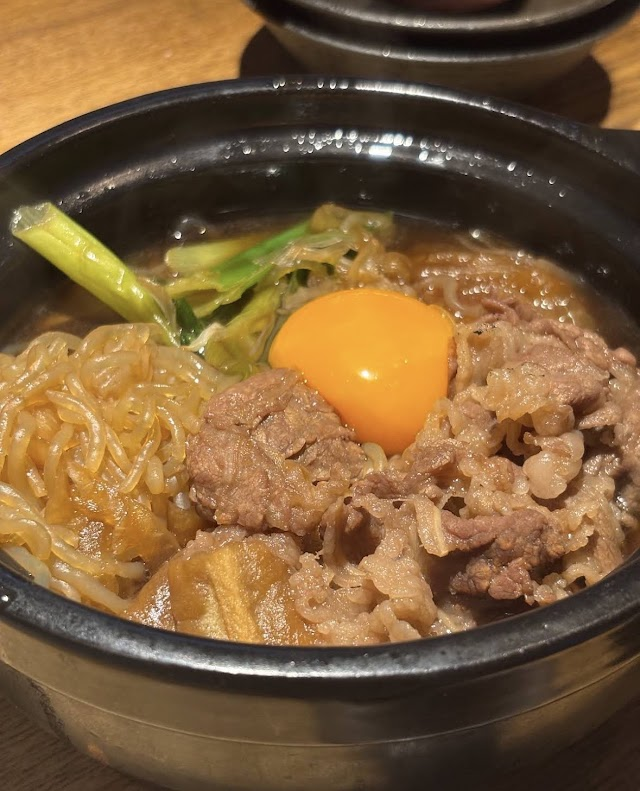
| 営業時間 | 月・火・木・金 11:30〜13:30, 17:00〜22:00 ／ 土・日 17:00〜22:00 |
|---|---|
| 定休日 | 水曜 |
| 住所 | 京都府京都市下京区高倉通四条下ル高材木町２２１−２ |
| 予約 | 可 — ☎ 075-344-3440 ／ 公式サイト |
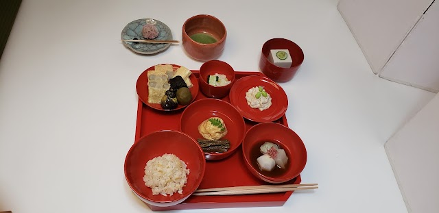
| 営業時間 | 月・火・水・木・金・土・日 12:00〜14:00, 17:00〜18:00 |
|---|---|
| 定休日 | なし(要最終確認) |
| 住所 | 京都府京都市北区紫野下門前町２０ |
| 予約 | 可 — ☎ 075-493-0019 ／ 公式サイト |
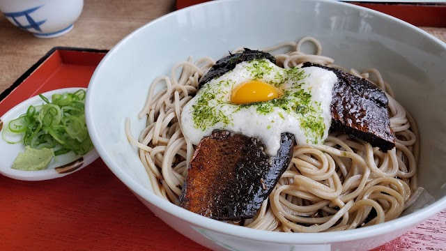
| 営業時間 | 月・火・木・金・土・日 10:30〜20:30 |
|---|---|
| 定休日 | 水曜 |
| 住所 | 京都府京都市東山区四条大橋東入ル川端町１９２ |
| 予約 | 要確認 — ☎ 075-561-1451 ／ 公式サイト |
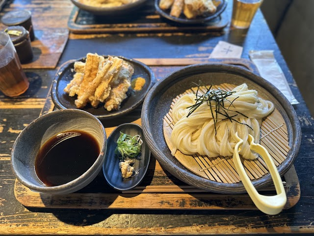
| 営業時間 | 月・火・金 9:45〜16:30 ／ 水 9:45〜15:30 ／ 土・日 9:45〜17:00 |
|---|---|
| 定休日 | 木曜 |
| 住所 | 京都府京都市左京区岡崎南御所町３４ |
| 予約 | 可 — ☎ 075-744-1876 ／ 公式サイト |
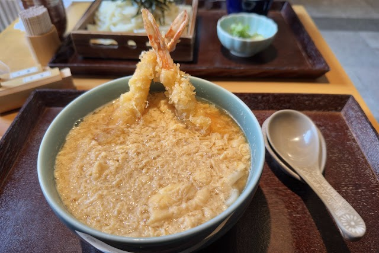
| 営業時間 | 月・木・金・土・日 11:00〜18:00 |
|---|---|
| 定休日 | 火・水曜 |
| 住所 | 京都府京都市左京区岡崎南御所町３４ |
| 予約 | 要確認 — ☎ 075-771-4831 ／ 公式サイト |
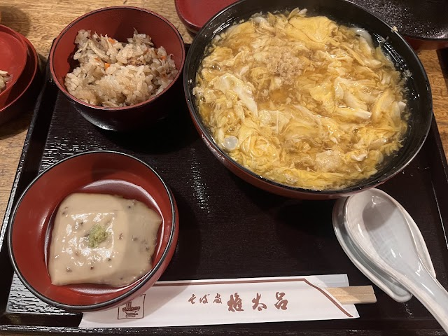
| 営業時間 | 月・火・木・金・土・日 11:00〜21:00 |
|---|---|
| 定休日 | 水曜 |
| 住所 | 京都府京都市中京区麸屋町通四条上ル桝屋町 |
| 予約 | 可 — ☎ 075-221-5810 ／ 公式サイト |
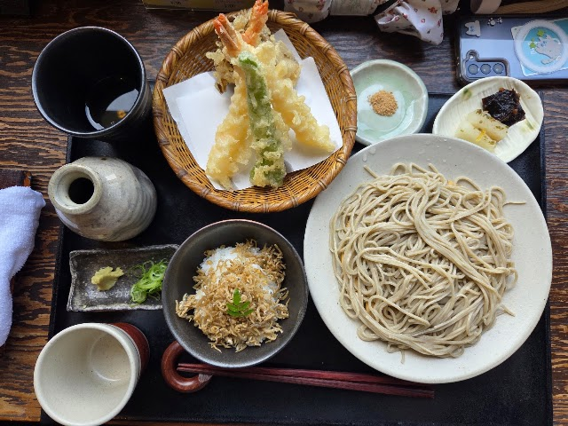
| 営業時間 | 月・火・水・木・金 11:00〜16:00 ／ 土・日 11:00〜17:00 |
|---|---|
| 定休日 | なし(要最終確認) |
| 住所 | 京都府京都市右京区嵯峨天龍寺芒ノ馬場町３ |
| 予約 | 可 — ☎ 075-863-5700 ／ 公式サイト |
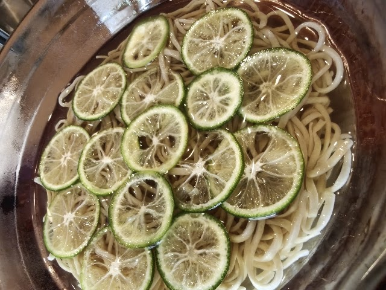
| 営業時間 | 火・水・木・金・土・日 11:00〜18:30 |
|---|---|
| 定休日 | 月曜 |
| 住所 | 京都府京都市中京区昆布屋町３９８ |
| 予約 | 要確認 — ☎ 075-212-7787 ／ 公式サイト |
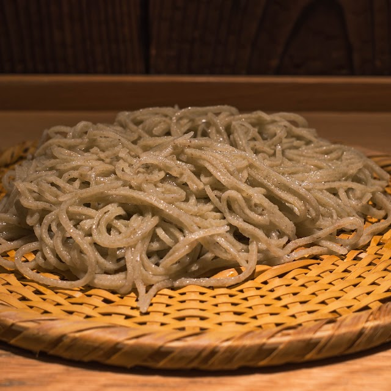
| 営業時間 | 月・木・金・土・日 11:30〜14:30, 17:30〜21:00 |
|---|---|
| 定休日 | 火・水曜 |
| 住所 | 京都府京都市上京区五辻町６９−３ |
| 予約 | 可 — ☎ 075-431-7567 ／ 公式サイト |
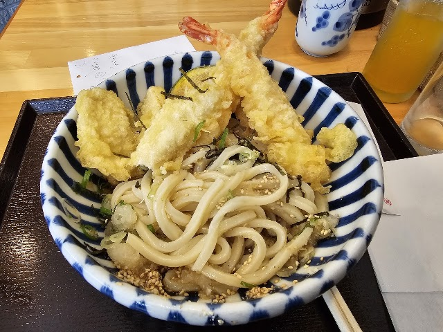
| 営業時間 | 月 11:00〜14:30 ／ 水・木・金・土・日 11:00〜14:30, 17:00〜19:30 |
|---|---|
| 定休日 | 火曜 |
| 住所 | 京都府京都市東山区五条橋東２丁目９−４ |
| 予約 | 要確認 |
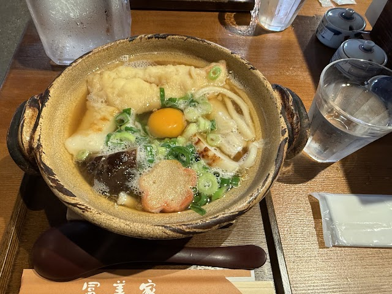
| 営業時間 | 木・金・土・日 11:00〜17:30 |
|---|---|
| 定休日 | 月・火・水曜 |
| 住所 | 京都府京都市中京区中魚屋町４９３ |
| 予約 | 要確認 — ☎ 075-221-0354 ／ 公式サイト |
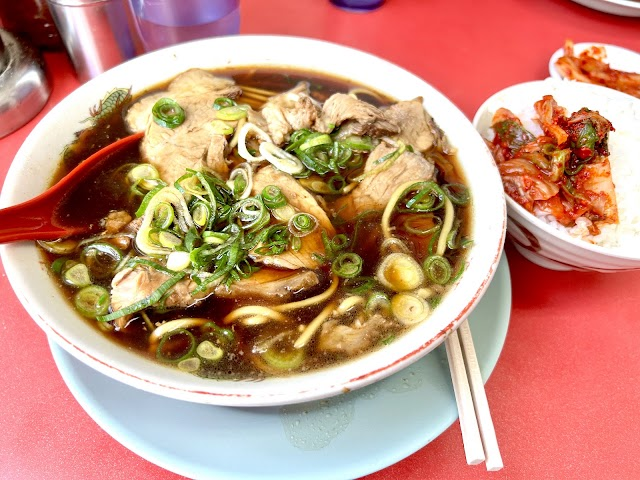
| 営業時間 | 月・火・木・金・土・日 9:00〜20:00 |
|---|---|
| 定休日 | 水曜 |
| 住所 | 京都府京都市下京区東塩小路町５６９ |
| 予約 | 要確認 — ☎ 075-371-7648 ／ 公式サイト |
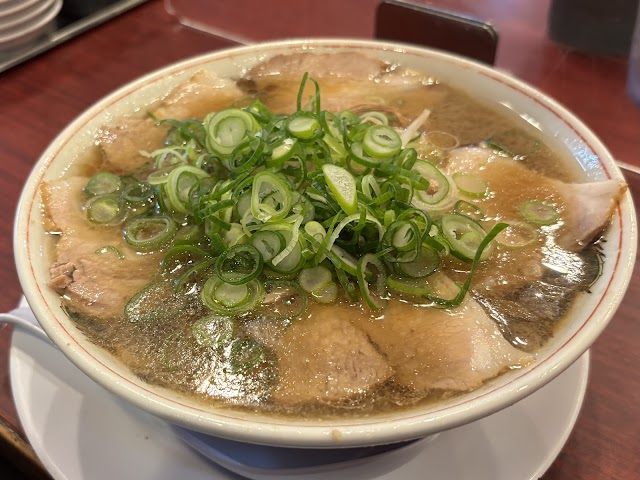
| 営業時間 | 月・火・水・金・土・日 6:00〜1:00 |
|---|---|
| 定休日 | 木曜 |
| 住所 | 京都府京都市下京区東塩小路町８４５ |
| 予約 | 要確認 — ☎ 075-351-6321 ／ 公式サイト |
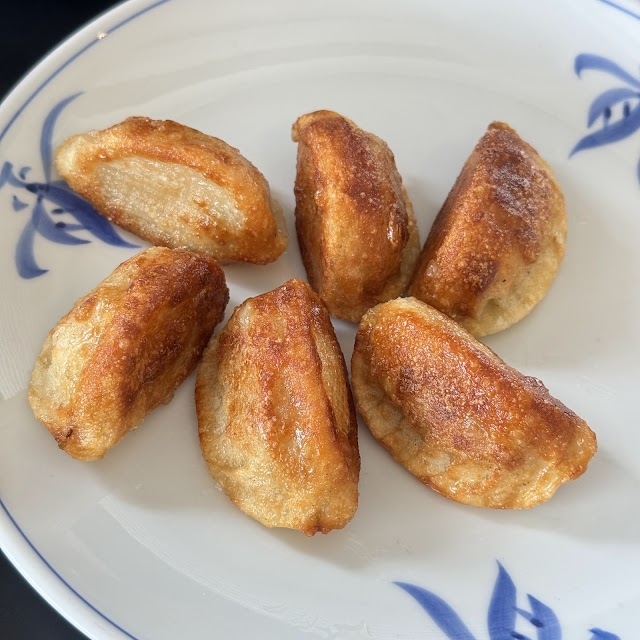
| 営業時間 | 月・水・木・金 11:30〜14:30, 17:00〜21:00 ／ 土・日 11:30〜21:00 |
|---|---|
| 定休日 | 火曜 |
| 住所 | 京都府京都市下京区斎藤町 四条大橋西詰 |
| 予約 | 可 — ☎ 075-221-1147 ／ 公式サイト |
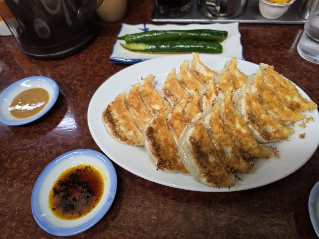
| 営業時間 | 月・火・水・金・土・日 11:30〜20:30 |
|---|---|
| 定休日 | 木曜 |
| 住所 | 京都府京都市南区唐橋高田町４２ |
| 予約 | 要確認 — ☎ 075-691-1991 ／ 公式サイト |
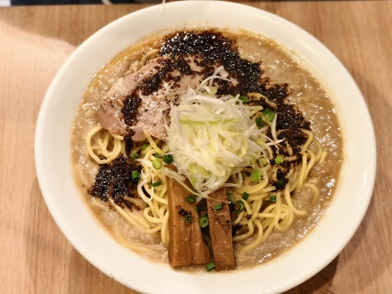
| 営業時間 | 火・水・木・金・土・日 11:30〜22:00 |
|---|---|
| 定休日 | 月曜 |
| 住所 | 京都府京都市左京区一乗寺西閉川原町２９−７ |
| 予約 | 要確認 — ☎ 075-711-3133 ／ 公式サイト |
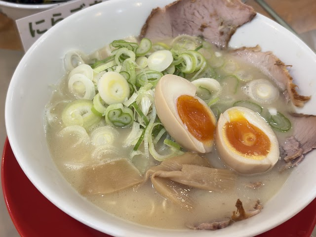
| 営業時間 | 月・火・水・木・金・土・日 11:30〜2:00 |
|---|---|
| 定休日 | なし(要最終確認) |
| 住所 | 京都府京都市左京区一乗寺高槻町１０ |
| 予約 | 要確認 — ☎ 075-721-4878 ／ 公式サイト |
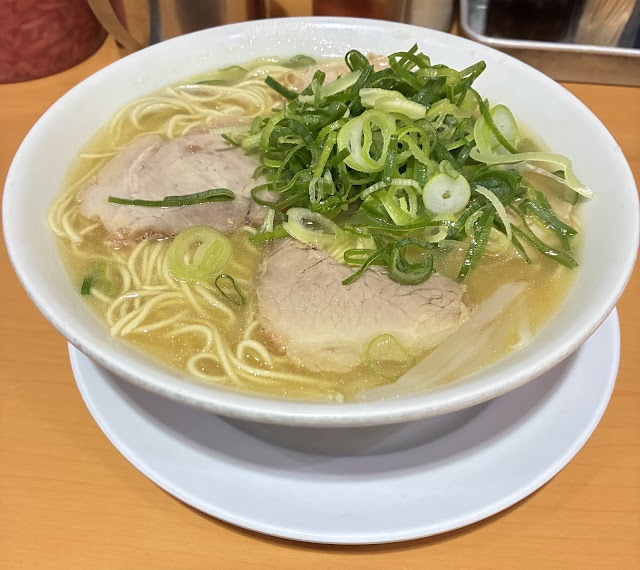
| 営業時間 | 月・火・木・金・土・日 12:00〜22:00 |
|---|---|
| 定休日 | 水曜 |
| 住所 | 京都府京都市左京区一乗寺西杉ノ宮町４９ |
| 予約 | 要確認 — ☎ 075-711-3255 ／ 公式サイト |
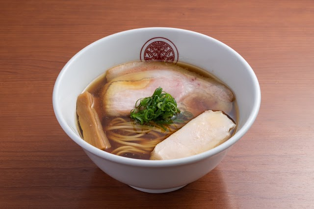
| 営業時間 | 月・水・木・金・土・日 11:00〜14:30, 18:00〜21:00 |
|---|---|
| 定休日 | 火曜 |
| 住所 | 京都府京都市左京区山端壱町田町８−６ 京福修学院マンション 1F |
| 予約 | 要確認 — ☎ 075-721-6556 ／ 公式サイト |
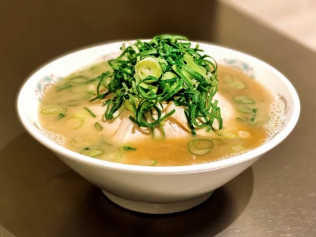
| 営業時間 | 火・水・木・金・土・日 11:00〜22:30 |
|---|---|
| 定休日 | 月曜 |
| 住所 | 京都府京都市伏見区京町大黒町１１８ |
| 予約 | 要確認 — ☎ 075-612-3153 ／ 公式サイト |
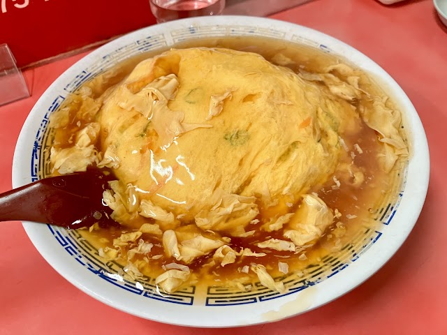
| 営業時間 | 月・水・木・金・土・日 11:00〜5:45 |
|---|---|
| 定休日 | 火曜 |
| 住所 | 京都府京都市東山区南西海子町４３１−３ |
| 予約 | 要確認 — ☎ 075-561-4825 ／ 公式サイト |
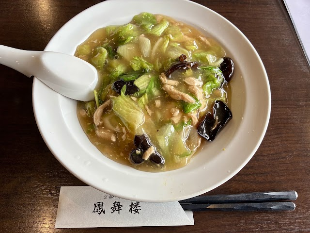
| 営業時間 | 月・木・金・土・日 11:30〜14:00, 17:00〜20:30 |
|---|---|
| 定休日 | 火・水曜 |
| 住所 | 京都府京都市上京区今出川町３３３ 第二高橋ビル 5階 |
| 予約 | 可 — ☎ 075-451-5000 |
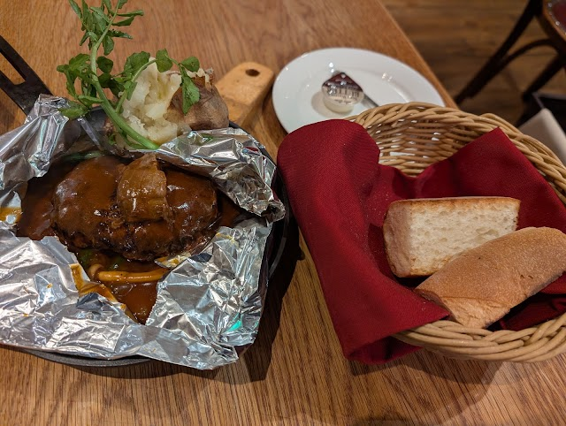
| 営業時間 | 月・火・水・木・金・土・日 11:00〜22:00 |
|---|---|
| 定休日 | なし(要最終確認) |
| 住所 | 京都府京都市北区上賀茂岩ケ垣内町28番地の3 |
| 予約 | 可 — ☎ 075-722-2121 ／ 公式サイト |
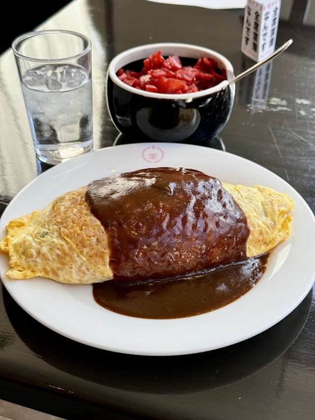
| 営業時間 | 月・木・金・土・日 11:30〜20:30 |
|---|---|
| 定休日 | 火・水曜 |
| 住所 | 京都府京都市左京区岡崎北御所町４６ |
| 予約 | 要確認 — ☎ 075-771-5893 ／ 公式サイト |
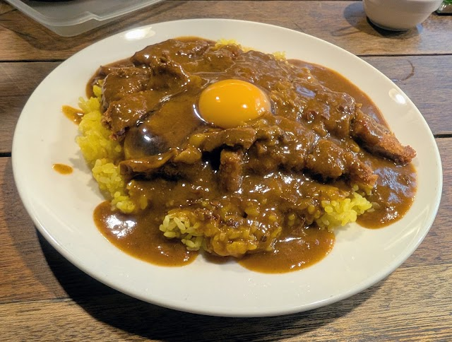
| 営業時間 | 月・火・水・木・金 11:00〜15:00, 17:30〜21:00 ／ 日 11:00〜16:00 |
|---|---|
| 定休日 | 土曜 |
| 住所 | 京都府京都市左京区聖護院西町１２ |
| 予約 | 要確認 — ☎ 075-751-7415 |
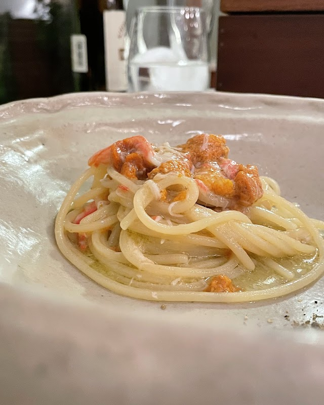
| 営業時間 | 月・木・金・土・日 12:00〜14:00, 18:00〜20:00 |
|---|---|
| 定休日 | 火・水曜 |
| 住所 | 京都府京都市東山区八坂上町３８８−１ |
| 予約 | 可 — ☎ 075-532-2550 ／ 公式サイト |
| 営業時間 | 月・火・水・金・土・日 11:30〜14:30, 17:30〜21:30 |
|---|---|
| 定休日 | 木曜 |
| 住所 | 京都府京都市中京区榎木町７１−１ １F |
| 予約 | 可 — ☎ 075-211-5220 ／ 公式サイト |
| 営業時間 | 月・火・水・金・土・日 11:00〜13:30, 17:30〜19:30 |
|---|---|
| 定休日 | 木曜 |
| 住所 | 京都府京都市上京区姥ケ西町５９１ |
| 予約 | 要確認 — ☎ 075-441-4119 ／ 公式サイト |
| 営業時間 | 火 11:30〜15:00, 18:00〜21:00 ／ 水・木・金・土 11:30〜15:00 |
|---|---|
| 定休日 | 月・日曜 |
| 住所 | 京都府京都市下京区室町通綾小路下る白楽天町５０２ |
| 予約 | 要確認 — ☎ 075-342-3813 ／ 公式サイト |
| 営業時間 | 火・水・木・金・土・日 12:00〜14:30, 18:00〜21:30 |
|---|---|
| 定休日 | 月曜 |
| 住所 | 京都府京都市左京区岡崎円勝寺町６２ ボーパサージュ京都岡崎 棟 1F 店舗 |
| 予約 | 可 — ☎ 075-761-6765 ／ 公式サイト |
| 営業時間 | 月・火・水・木・金・土・日 7:00〜18:00 |
|---|---|
| 定休日 | なし(要最終確認) |
| 住所 | 京都府京都市中京区道祐町１４０ |
| 予約 | 要確認 — ☎ 075-221-0507 ／ 公式サイト |
| 営業時間 | 月・水・木・金・土・日 10:00〜18:00 |
|---|---|
| 定休日 | 火曜 |
| 住所 | 京都府京都市左京区北白川追分町８８ |
| 予約 | 要確認 — ☎ 075-701-4121 |
| 営業時間 | 月・火・木・金・土・日 12:00〜22:30 |
|---|---|
| 定休日 | 水曜 |
| 住所 | 京都府京都市中京区河原町三条下ル大黒町４０ B1F |
| 予約 | 要確認 — 公式サイト |
| 営業時間 | 火・水・木・金・土 6:30〜20:00 ／ 日 6:30〜14:00 |
|---|---|
| 定休日 | 月曜 |
| 住所 | 京都府京都市下京区松原通猪熊西入北門前町７４０ |
| 予約 | 要確認 — ☎ 075-821-9683 ／ 公式サイト |
| 営業時間 | 火・水・木・金 13:00〜19:00 ／ 土・日 13:00〜19:30 |
|---|---|
| 定休日 | 月曜 |
| 住所 | 京都府京都市下京区西木屋町通四条上る真町９５ |
| 予約 | 要確認 — ☎ 075-221-0351 ／ 公式サイト |
| 営業時間 | 月・火・水・木・金・土・日 8:00〜19:00 |
|---|---|
| 定休日 | なし(要最終確認) |
| 住所 | 京都府京都市中京区天性寺前町５３７ |
| 予約 | 要確認 — ☎ 075-231-6547 ／ 公式サイト |
| 営業時間 | 月・火・水・木・金・土・日 8:00〜18:00 |
|---|---|
| 定休日 | なし(要最終確認) |
| 住所 | 京都府京都市中京区上松屋町７０６−５ |
| 予約 | 可 — ☎ 075-744-0067 ／ 公式サイト |
| 営業時間 | 月・火・水・木・金・土・日 7:00〜20:00 |
|---|---|
| 定休日 | なし(要最終確認) |
| 住所 | 京都府京都市右京区山ノ内五反田町１０ カーサ御池 |
| 予約 | 要確認 — ☎ 075-803-2550 ／ 公式サイト |
| 営業時間 | 月・火・水・木・金・土・日 8:00〜18:00 |
|---|---|
| 定休日 | なし(要最終確認) |
| 住所 | 京都府京都市上京区元北小路町１５９ |
| 予約 | 要確認 — ☎ 075-432-1444 ／ 公式サイト |
| 営業時間 | 火・水・木・金・土 8:30〜18:00 |
|---|---|
| 定休日 | 月・日曜 |
| 住所 | 京都府京都市上京区般舟院前町１３６ 今出川通, 千本東入 |
| 予約 | 要確認 — ☎ 075-441-3888 ／ 公式サイト |
| 営業時間 | 月・水・木・金・土・日 8:30〜17:30 |
|---|---|
| 定休日 | 火曜 |
| 住所 | 京都府京都市上京区青龍町２３６ |
| 予約 | 要確認 — ☎ 075-231-1658 |
| 営業時間 | 月・火・金・土・日 9:00〜17:00 |
|---|---|
| 定休日 | 水・木曜 |
| 住所 | 京都府京都市上京区紙屋川町８３８−７ |
| 予約 | 要確認 — ☎ 075-461-4517 |
| 営業時間 | 月・火・水・木・金・土・日 10:30〜19:30 |
|---|---|
| 定休日 | なし(要最終確認) |
| 住所 | 京都府京都市東山区祇園町南側５７３−３ |
| 予約 | 要確認 — ☎ 075-561-2257 ／ 公式サイト |
| 営業時間 | 月・火・木・金・土・日 9:30〜18:00 |
|---|---|
| 定休日 | 水曜 |
| 住所 | 京都府京都市中京区堀之上町１２０ |
| 予約 | 要確認 — ☎ 075-221-3311 ／ 公式サイト |
| 営業時間 | 月・火・木・金・土・日 8:30〜17:30 |
|---|---|
| 定休日 | 水曜 |
| 住所 | 京都府京都市西京区桂浅原町６１ |
| 予約 | 要確認 — ☎ 075-381-2650 ／ 公式サイト |
| 営業時間 | 水・木・金・土・日 9:30〜15:00 |
|---|---|
| 定休日 | 月・火曜 |
| 住所 | 京都府京都市下京区横諏訪町３１２ |
| 予約 | 要確認 — ☎ 075-351-5825 |
| 営業時間 | 月・火・水・木・金・土・日 10:30〜19:30 |
|---|---|
| 定休日 | なし(要最終確認) |
| 住所 | 京都府京都市中京区天性寺前町５２６ |
| 予約 | 要確認 — 公式サイト |
| 営業時間 | 月・火・水・木・金・土・日 10:00〜17:00 |
|---|---|
| 定休日 | なし(要最終確認) |
| 住所 | 京都府京都市中京区寺町通二条上る常盤木町５２ |
| 予約 | 可 — ☎ 075-211-4018 ／ 公式サイト |
本ガイドは個人利用目的で作成。掲載情報は2026年8月時点の調査に基づく。写真出典: Google Maps投稿写真(©各投稿者/Google)。